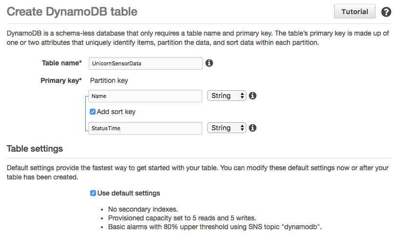
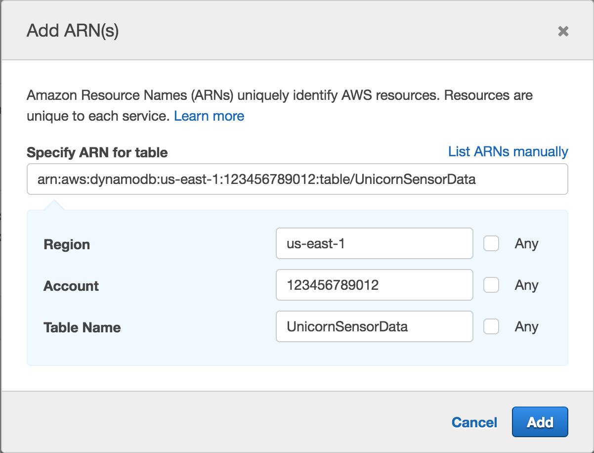
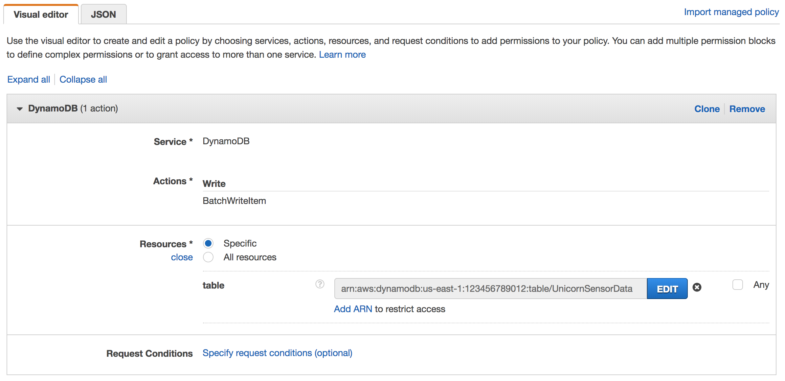
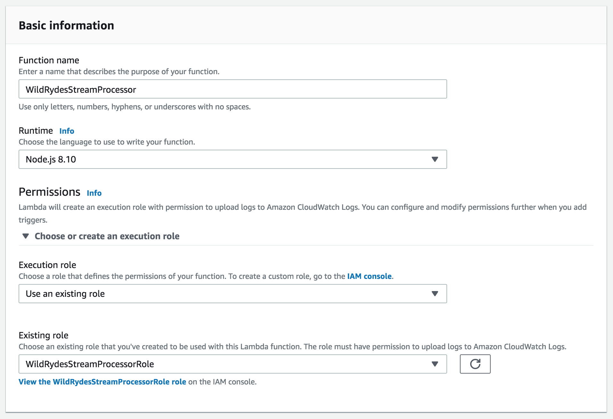
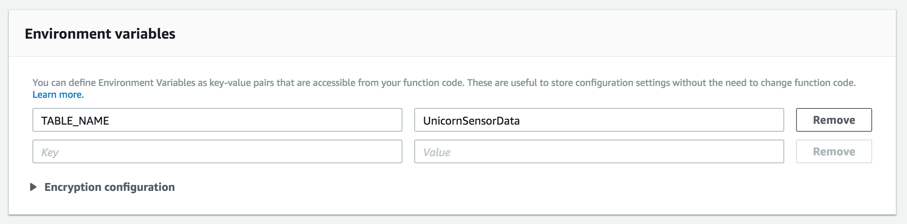
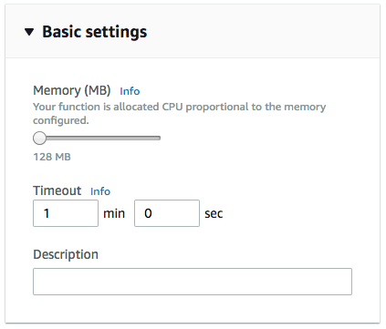
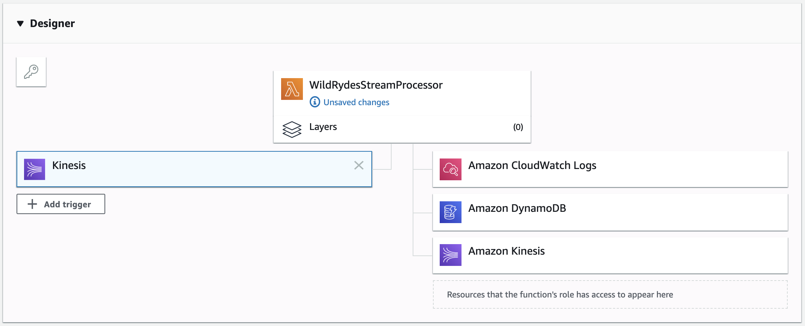
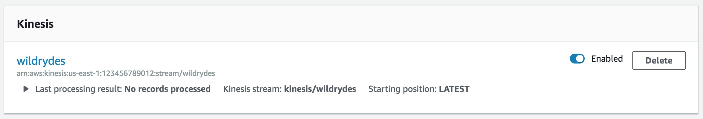
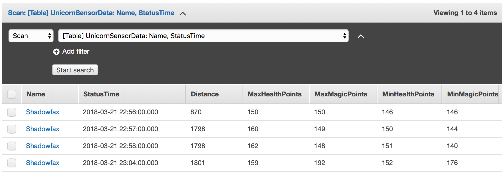

Serverless Data Processing on AWS
Stream Processing
In this module, you’ll use AWS Lambda to process data from the wildrydes Amazon Kinesis stream created earlier. We’ll create and configure a Lambda function to read from the stream and write records to an Amazon DynamoDB table as they arrive.
Implementation
1. Create an Amazon DynamoDB table
Use the Amazon DynamoDB console to create a new DynamoDB table. Call your table UnicornSensorData and give it a Partition key called Name of type String and a Sort key called StatusTime of type String. Use the defaults for all other settings.
After you’ve created the table, note the Amazon Resource Name (ARN) for use in the next section.
✅ Step-by-step Instructions
Go to the AWS Management Console, choose Services then select DynamoDB under Database.
Click Create table.
Enter
UnicornSensorDatafor the Table name.Enter
Namefor the Partition key and select String for the key type.Tick the Add sort key checkbox. Enter
StatusTimefor the Sort key and select String for the key type.Leave the Use default settings box checked and choose Create.

Scroll to the Table details section of your new table’s properties and note the Amazon Resource Name (ARN). You will use this in the next step.
2. Create an IAM role for your Lambda function
Use the IAM console to create a new role. Name it WildRydesStreamProcessorRole and select Lambda for the role type. Attach the managed policy called AWSLambdaKinesisExecutionRole to this role in order to grant permissions for your function to read from Amazon Kinesis streams and to log to Amazon CloudWatch Logs. Create a policy that allows dynamodb:BatchWriteItem access to the DynamoDB table created in the last section and attach it to the new role.
✅ Step-by-step Instructions
From the AWS Console, click on Services and then select IAM in the Security, Identity & Compliance section.
Select Policies from the left navigation and then click Create policy.
Using the Visual editor, we’re going to create an IAM policy to allow our Lambda function access to the DynamoDB table created in the last section. To begin, click Service, begin typing DynamoDB in Find a service, and click DynamoDB.
Click Action, begin typing BatchWriteItem in Filter actions, and tick the BatchWriteItem checkbox.
Click Resources, click Add ARN in table, and construct the ARN of the DynamoDB table you created in the previous section by specifying the Region, Account, and Table Name.
In Region, enter the AWS Region in which you created the DynamoDB table in the previous section, e.g.: us-east-1.
In Account, enter your AWS Account ID which is a twelve digit number, e.g.: 123456789012. To find your AWS account ID number in the AWS Management Console, click on Support in the navigation bar in the upper-right, and then click Support Center. Your currently signed in account ID appears in the upper-right corner below the Support menu.
In Table Name, enter UnicornSensorData.
You should see your ARN in the Specify ARN for table field and it should look similar to:

Click Add.
Click Review policy.

Enter
WildRydesDynamoDBWritePolicyin the Name field.Click Create policy.
Select Roles from the left navigation and then click Create role.
Click Lambda for the role type from the AWS service section.
Click Next: Permissions.
Begin typing
AWSLambdaKinesisExecutionRolein the Filter text box and check the box next to that role.Begin typing
WildRydesDynamoDBWritePolicyin the Filter text box and check the box next to that role.Click Next: Review.
Enter
WildRydesStreamProcessorRolefor the Role name.Click Create role.
3. Create a Lambda function to process the stream
Create a Lambda function called WildRydesStreamProcessor that will be triggered whenever a new record is avaialble in the wildrydes stream. Use the provided index.js implementation for your function code. Create an environment variable with the key TABLE_NAME and the value UnicornSensorData. Configure the function to use the WildRydesStreamProcessor role created in the previous section.
✅ Step-by-step Instructions
Go to the AWS Management Console, choose Services then select Lambda under Compute.
Click Create a function.
Enter
WildRydesStreamProcessorin the Name field.Select WildRydesStreamProcessorRole from the Existing role dropdown.

Click Create function.
Scroll down to the Function code section.
Select Node.js 6.10 from Runtime.
Copy and paste the JavaScript code below into the code editor.
'use strict'; const AWS = require('aws-sdk'); const dynamoDB = new AWS.DynamoDB.DocumentClient(); const tableName = process.env.TABLE_NAME; exports.handler = function(event, context, callback) { const requestItems = buildRequestItems(event.Records); const requests = buildRequests(requestItems); Promise.all(requests) .then(() => callback(null, `Delivered ${event.Records.length} records`)) .catch(callback); }; function buildRequestItems(records) { return records.map((record) => { const json = Buffer.from(record.kinesis.data, 'base64').toString('ascii'); const item = JSON.parse(json); return { PutRequest: { Item: item, }, }; }); } function buildRequests(requestItems) { const requests = []; while (requestItems.length > 0) { const request = batchWrite(requestItems.splice(0, 25)); requests.push(request); } return requests; } function batchWrite(requestItems, attempt = 0) { const params = { RequestItems: { [tableName]: requestItems, }, }; let delay = 0; if (attempt > 0) { delay = 50 * Math.pow(2, attempt); } return new Promise(function(resolve, reject) { setTimeout(function() { dynamoDB.batchWrite(params).promise() .then(function(data) { if (data.UnprocessedItems.hasOwnProperty(tableName)) { return batchWrite(data.UnprocessedItems[tableName], attempt + 1); } }) .then(resolve) .catch(reject); }, delay); }); }
In the Environment variables section, enter an environment variable with Key
TABLE_NAMEand ValueUnicornSensorData.
In the Basic settings section. Set the Timeout to 1 minute.

Scroll up and select Kinesis from the Designer section.

In the Configure triggers section, select wildrydes-summary from Kinesis Stream.
Leave Batch size set to 100 and Starting position set to Latest.
Click Add.
Click Enabled to enable the trigger.

Click Save.
4. Monitor the Lambda function
Verify that the trigger is properly executing the Lambda function. View the metrics emitted by the function and inspect the output from the Lambda function.
✅ Step-by-step Instructions
Run the producer to start emiting sensor data to the stream with a unique unicorn name.
./producer -name RocinanteClick on the Monitoring tab and explore the metrics available to monitor the function. Click on Jump to Logs to explore the function’s log output.
5. Query the DynamoDB table
Using the AWS Management Console, query the DynamoDB table for data for a specific unicorn. Use the producer to create data from a distinct unicorn name and verify those records are persisted.
✅ Step-by-step Instructions
Click on Services then select DynamoDB in the Database section.
Click Tables from the left-hand navigation
Click on UnicornSensorData.
Click on the Items tab. Here you should see each per-minute data point for each Unicorn for which you’re running a producer.

⭐️ Recap
🔑 You can subscribe Lambda functions to automatically read batches of records off your Kinesis stream and process them if records are detected on the stream.
🔧 In this module, you’ve created a Lambda function that reads from the Kinesis stream of summary unicorn data and saves each row to DynamoDB.
Next
✅ Proceed to the next module, Data Lake, wherein you’ll deliver the raw stream data from the Kinesis stream to Kinesis Data Firehose for delivery to Amazon S3 and use Amazon Athena to query that raw data.